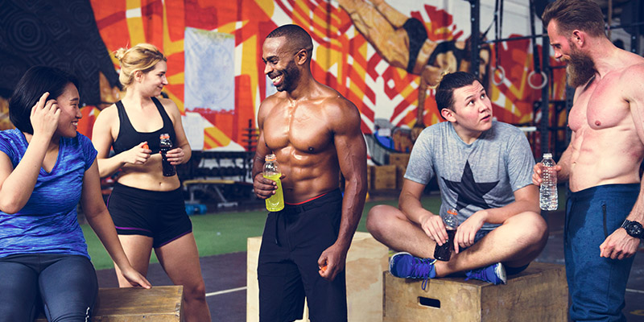
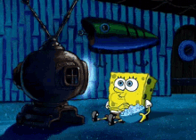

Este un hobby pe care l-am acumulat de curând. Majoritatea zilei stăteam pe scaun în fața ecranului: mișcare puțină și poziție fixă, pe lângă statul pe scaun care este oricum nesănătos.
Sa vorbim despre sport: ce înseamnă el, de ce este bine să faci mișcare, care ne sunt opțiunile, însă nu am adunat laolaltă beneficiile acestuia, beneficii care s-ar putea să vă intereseze.
Programarea este un hobby acumulat de curând, pe care l-am dezvoltat la facultate.
Programarea este dispunerea cronologică a unor mișcări, operații, acțiuni sau activități astfel încât în finalul perioadei să se realizeze o stare posibilă a unui sistem. Programarea este cunoscută ca activitate umană dar există semnalmente că pot exista forme de programare naturale, fără intervenția omului cum sunt dispunerile proceselor genetice sau comportamentele dirijate instinctual la animale.
Programarea informatică este o activitate informatică de elaborare a produselor-program, a programelor (software ) necesare activităților realizate cu ajutorul calculatorului. Programarea informatică conține următoarele subactivități: specificarea, proiectarea, implementarea, documentarea și întreținerea produsului program.
Ma uit la filme de fiecare data cand am timp , este un hobby pe care il am de mic. Nimic nu ma relaxeaza mai mult decat un film bun
Filmul este un produs al artei și al industriei cinematografice, este un mod de relaxare, de petrecere a timpului liber. Prima proiecție cinematografică a unui film a avut loc în anul 1895, la Paris. Deși, la început, filmul a fost socotit ca un circ, o formă de amuzament criticată îndelung de oamenii serioși, astăzi, filmul joacă un rol important în viața noastră de zi cu zi. Primele filme apărute au avut context amuzant, ele numindu-se mai târziu, comedii, iar odată cu trecerea timpului și extinderea sa în diferite ținuturi, genurile filmului s-au diversificat.
Astăzi, filmul reprezintă o artă modernă, un mijloc predominant de relaxare, o industrie explozivă și în continuă dezvoltare.
Genurile filmului s-au diversificat într-atât, încât există filme pe gusturile fiecărei persoane și pentru toate vârstele.
Filmul a devenit plăcerea de a cunoaște, de a vedea dincolo de granițe, de a dobândi idei, gesturi, de a cunoaște diferite culturi, fără a face un efort.
Intreg documntarul aici